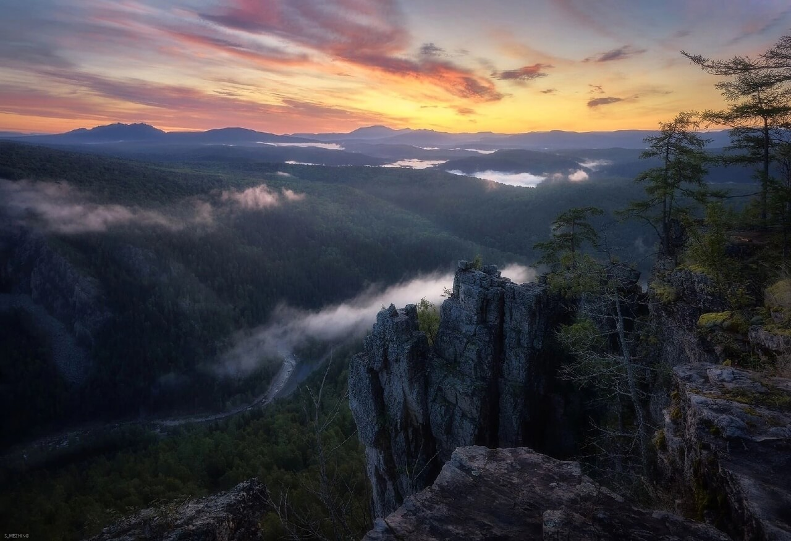
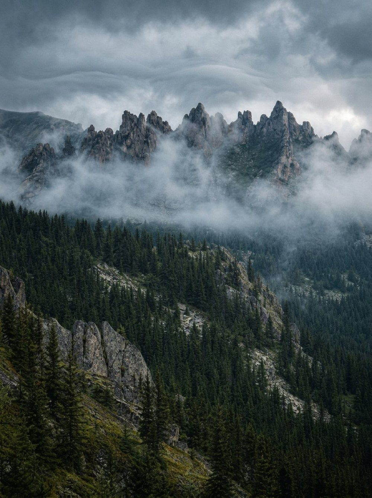
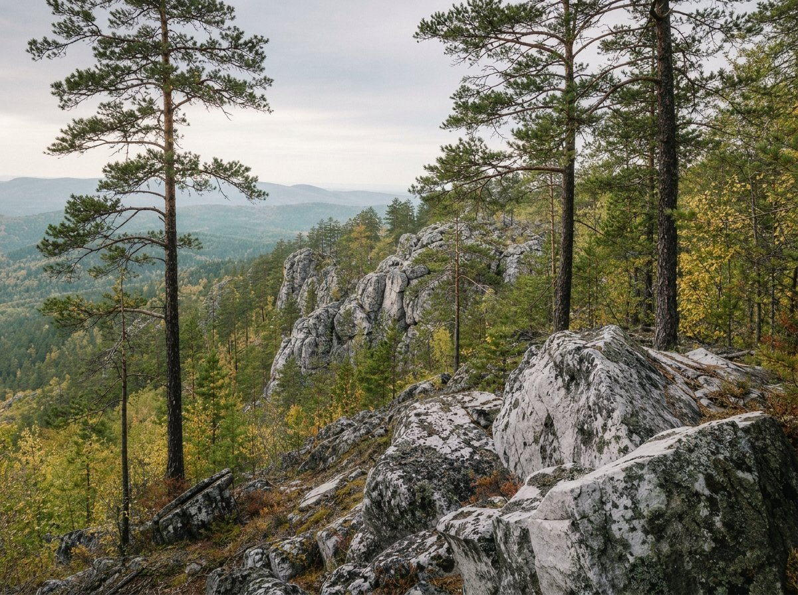
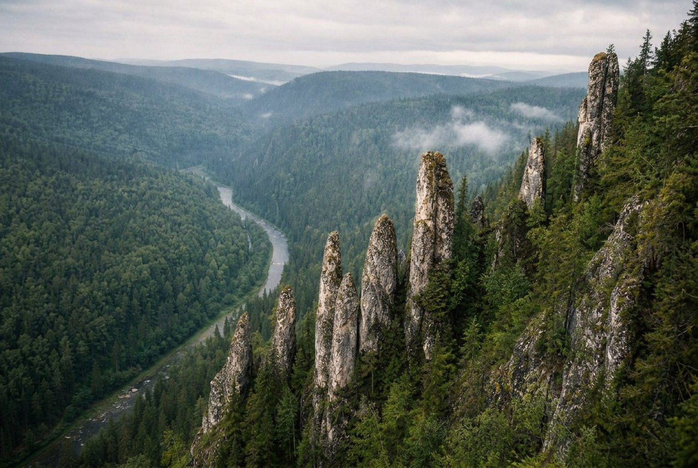

01 / ВЫСОТА
01 / ВЫСОТА
Горный маршрут
Ялангас
Высшая точка — 1 297 метров. Панорамы горных хребтов и маршрут с пешей частью; возможна квадро-заброска к началу тропы.
Описание маршрута ↗«Мир имеет свойство раздвигаться» — Райнхольд Месснер, Хрустальный Горизонт
Путешествия по Южному Уралу
Горы. Реки. Люди. Однодневные путешествия из Белорецка — туда, где привычный горизонт становится шире.
Хрустальный Горизонт
Мы открываем Южный Урал через пешие маршруты, горные дороги и речные путешествия. Здесь важны не только виды, но и путь, команда и внимание к каждому участнику.
Исследуйте Южный Урал
Однодневные выходы из Белорецка. Даты, стоимость и условия участия уточняются перед каждым выездом.
01 / ВЫСОТА
Горный маршрут
Высшая точка — 1 297 метров. Панорамы горных хребтов и маршрут с пешей частью; возможна квадро-заброска к началу тропы.
Описание маршрута ↗
02 / СКАЛЫПеший маршрут
Зубчатые скалы, лесные тропы и открытые виды на долину Малого Инзера.
Описание маршрута ↗ 03 / ТИШИНА
03 / ТИШИНА
Пеший маршрут
Тихий горный день среди лесов и уральских панорам. Подробности маршрута расскажем перед выездом.
Описание маршрута ↗
04 / ГРЯДАПеший маршрут
Горный хребет с острыми скалами-зубьями, пейзажем, напоминающим фильм «Аватар».
Описание маршрута ↗
05 / ЯГОДАПеший маршрут
Спокойное знакомство с горами для тех, кто здесь впервые; на склонах любят ягоды.
Описание маршрута ↗ 06 / РЕКА
06 / РЕКА
Водный маршрут
От Арского камня до Азапкиной поляны и легендарный «Всесоюзный маршрут №59».
Водные маршруты ↗
Река Белая · летний сезон
Летом отправляемся на сплавы по Белой. Один из знакомых участков — от Арского камня до Азапкиной поляны.
Наш подход
Хорошее путешествие начинается задолго до выхода на тропу — с подготовки, ясных договорённостей и внимания к группе.
Проверяем маршрут перед выездом и учитываем условия на местности.
Следим за группой, темпом движения и тем, чтобы участники не оставались без внимания.
До поездки обсуждаем нагрузку, экипировку, трансфер и организационные детали.
Южный Урал в деталях
Фотографии природных мест региона. В галерее постепенно появятся кадры наших путешествий.


Начнём с разговора
Напишите организатору, чтобы узнать ближайшие даты, наличие мест, стоимость и условия участия.